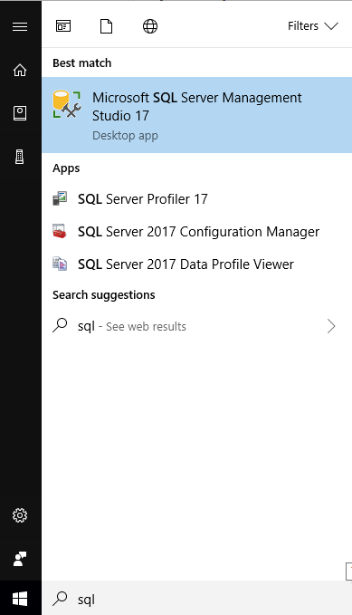

What is SQL?
- Stands for structured query language.
- Access data in a database.
- Is a standard across many different vendors.
What is a database
- Structured data of any kind in a central place.
- SQL is particularly for a relational database.
- Some columns relate to each other.
Tools
- Lots of different tools.
- We will be using Microsoft SQL Server management Studio.
- Find it in your start menu.

Data
- We are going to use some basic Tropical Storm data.
- Atlantic data which can be downloaded here
- Pacific data which can be downloaded here